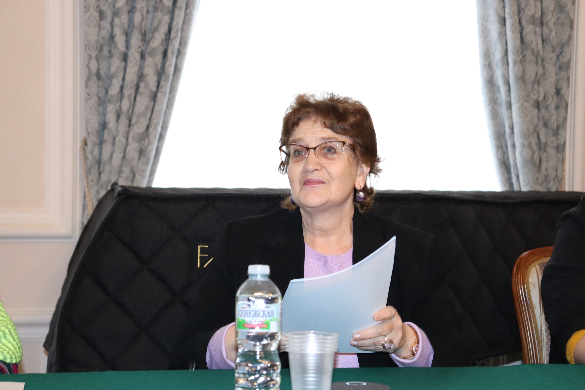

22 марта 2023 года в Конференц-зале Московской государственной консерватории имени П.И. Чайковского состоялась XXIII международная научная конференция «Русские музыкальные архивы за рубежом. Зарубежные музыкальные архивы в России». Организатором выступила Научная музыкальная библиотека имени С.И. Танеева. Имеющая уже 23-летнюю историю, конференция является важной и неотъемлемой частью научной жизни консерватории.
И.З. Торилова, директор НМБТ
Г.И. Ерофеева
И.В. Акимова (в центре)
Е.Д. Кривицкая
А.Е. Максимова
О.Д. Зиморой Чемодурова
А.А. Сафонова
К.Я. Носирова
М.Г. Раку

О.П. Кузина
С.А. Петухова
 Н.С. Зелов
Н.С. Зелов
Н.О. Баркалая